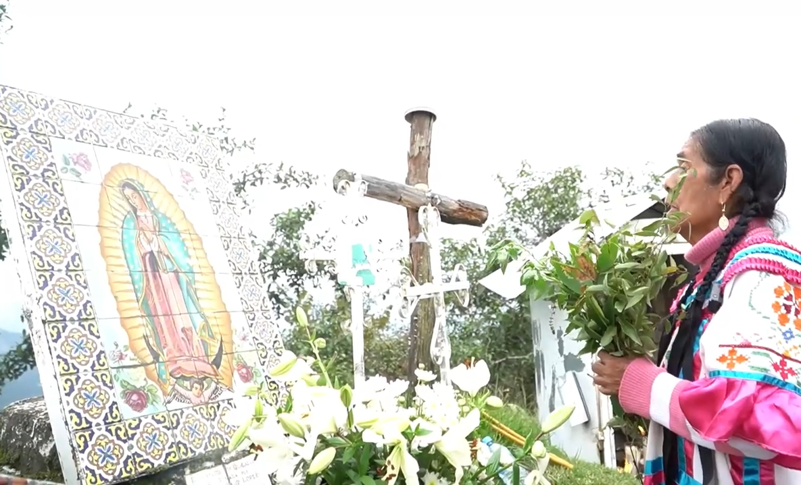
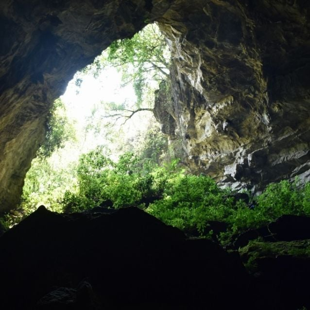
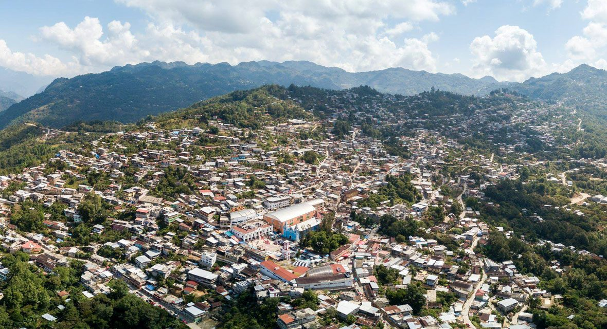

Línea del Tiempo Histórica
Para saber como es que llego a ser un pueblo mágico de Oaxaca
Siglos X–XIV Consolidación Mazateca
Se fortalecen estructuras comunitarias, lengua y sistemas rituales propios en la región montañosa.
Antes del siglo XVOrigen Mazateco
Desarrollo de la cosmovisión mazateca en la región montañosa.
1560 Fundación Colonial
Se establece formalmente el poblado bajo organización colonial, integrando estructuras religiosas y administrativas.
1520–1600Periodo Colonial
Fusión entre tradiciones indígenas y estructuras religiosas españolas.
Siglo XVII–XVIII Preservación Tradicional
A pesar de la influencia colonial, las comunidades mantienen rituales, medicina ancestral y lengua mazateca.
1950–1960Proyección Internacional
Reconocimiento mundial de la medicina tradicional mazateca.
1955 Encuentro Cultural Global
Investigadores y visitantes extranjeros llegan a la región, generando proyección internacional de la tradición espiritual mazateca.
1990 Fortalecimiento Cultural
Se consolidan festivales, rescate de danzas y programas de preservación de identidad mazateca.
Siglo XXITurismo Cultural
Preservación de identidad y fortalecimiento cultural contemporáneo.
2020–Actualidad Identidad Viva
Huautla continúa siendo referente cultural y espiritual, combinando tradición ancestral y turismo responsable.
“El territorio no se visita, se escucha.”
Cerro de la Adoración
Punto de observación espiritual y contemplación profunda.
Desde su cima, la neblina envuelve el paisaje
y crea una sensación de suspensión del tiempo.
Tradicionalmente asociado al silencio,
la introspección y la conexión con la montaña.

“La montaña no responde, revela.”
Cuevas de la región
Las cuevas han sido consideradas espacios de resguardo,
reflexión y conocimiento ancestral.
En la tradición mazateca,
representan el vientre de la tierra
y un punto de contacto con el mundo interior.

Cascadas y ríos
El agua marca el pulso natural del territorio.
Las cascadas y ríos de Huautla
no son espacios de ruido,
sino de pausa y purificación.
Su sonido constante acompaña al visitante
y favorece la calma mental.

“El agua limpia lo que la palabra no alcanza.”
Loma Chapultepec
Espacio de convivencia comunitaria
y transmisión de saberes tradicionales.
Asociado al aprendizaje,
la observación de la naturaleza
y la relación respetuosa entre persona y territorio.

El camino interior
Recorrer Huautla implica disminuir el ritmo,
observar con atención
y comprender que el valor espiritual
no siempre es visible.
Aquí, el viaje ocurre tanto afuera
como dentro.

“Quien camina con respeto, nunca camina solo.”
Mapa Interactivo
Explora los puntos naturales, cuevas y espacios comunitarios de Huautla
Explora el territorio
Selecciona un punto en el mapa para conocer más sobre este espacio.